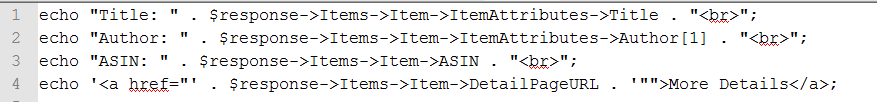
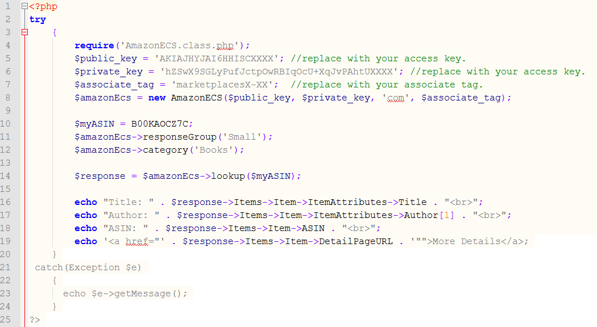
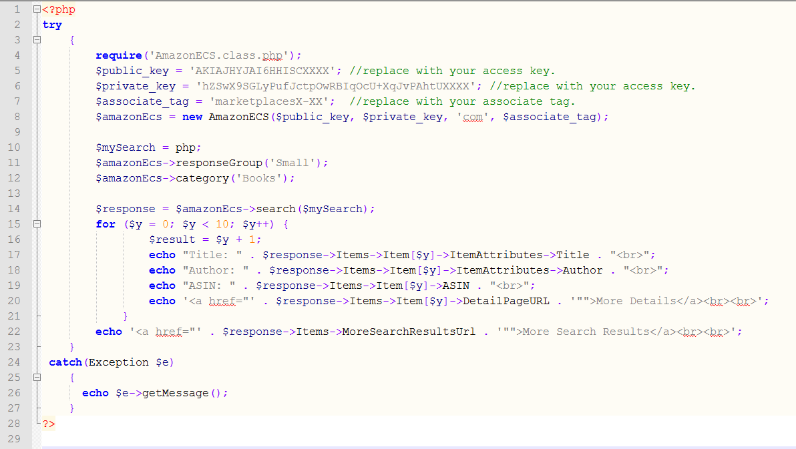

Section 4: ItemLookup Function
The Item Lookup Function is similar to the Item Search, but it looks up only a single product. Amazon uses an identifier called an ASIN (Amazon Standard Inventory Number) to identify an Amazon product listing page. This Look Up Function will look up the ASIN and return information about the product from the listing page. This function would be useful if you wanted to create links to specific products on your blog or website.
Create an $amazonEcs object:
$amazonEcs = new AmazonECS($public_key, $private_key, 'com', $associate_tag);
Create look up Variable
Create a variable for the ASIN and set it to and ASIN. For this example I will use the ASIN B00KAOCZ7C:
$myASIN = B00KAOCZ7C;
Set Response Group
To set the Response Group we will use the responseGroup() function from the library. For this example we will use the Small Response Group from Section 3:
$amazonEcs->responeGroup(‘small’);
Set Category
To set the category we will use the category() function from the library:
$amazonEcs->category('Books');
Response
We will create a variable called $response to store the return data and set it equal to the lookup() function:
$response = $amazonEcs->lookup($myASIN);
Returned Data
To show the returned data we will create echo statements:

Error handling:
The most common errors with using either the search or look up functions is a bad access key, associate tag, or country parameter. I found that using a try block was the best method to handle these errors. Below is all of the code for this section using a try block: ((Click here for more information on try and catch).

Here is the code from Section 3 using a try block:
